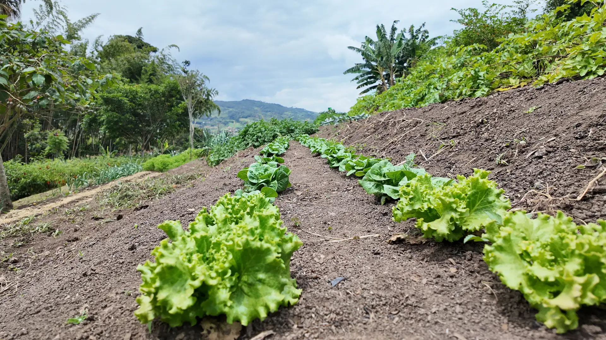
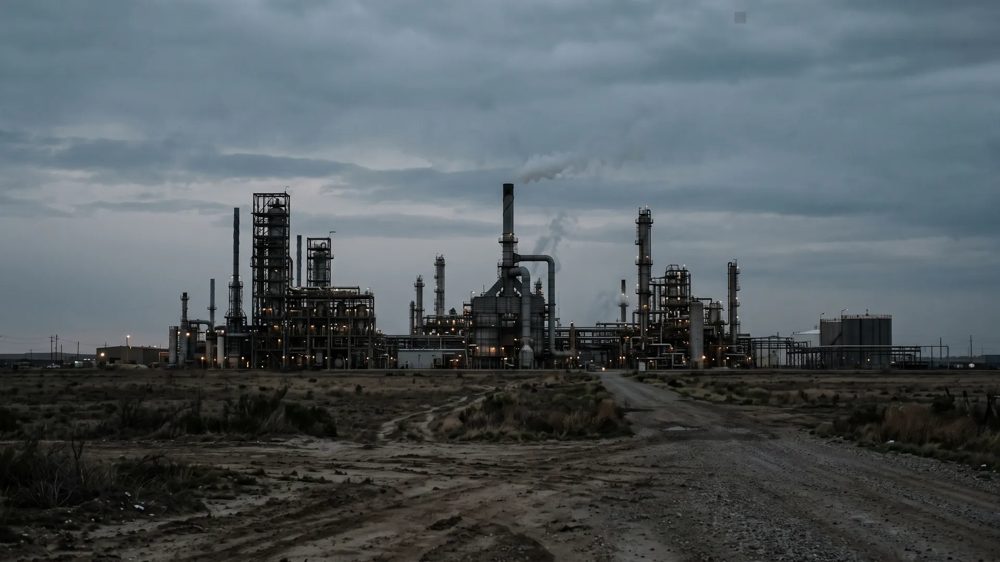
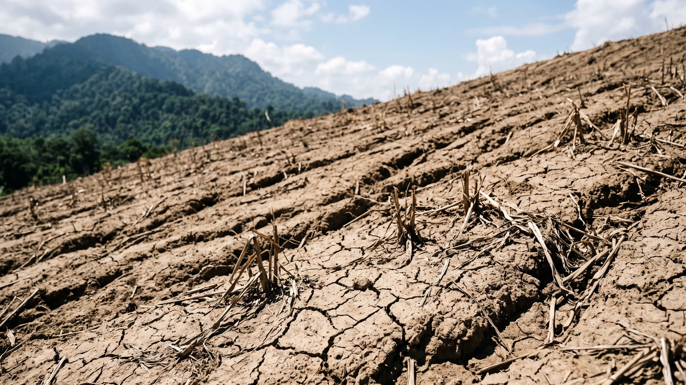
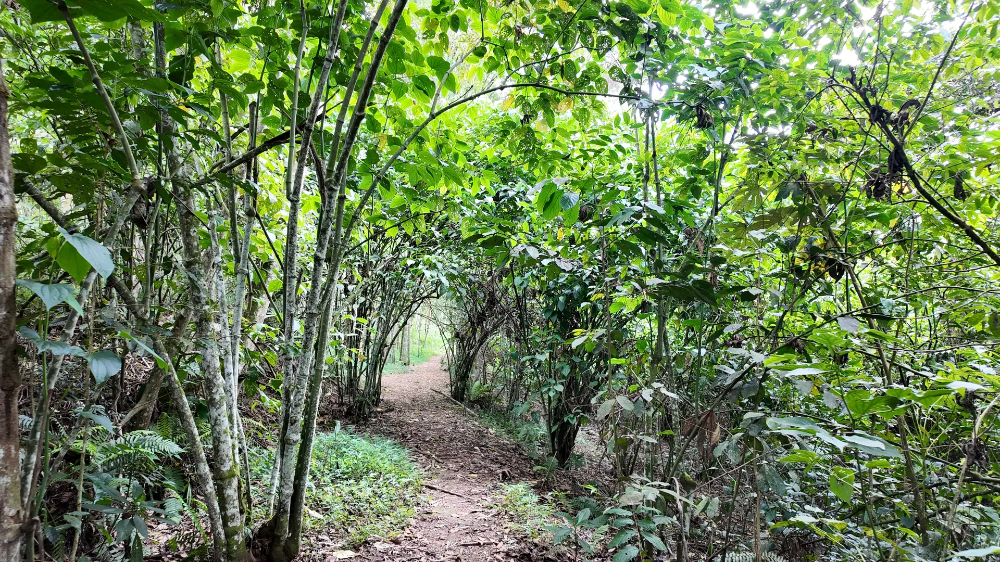
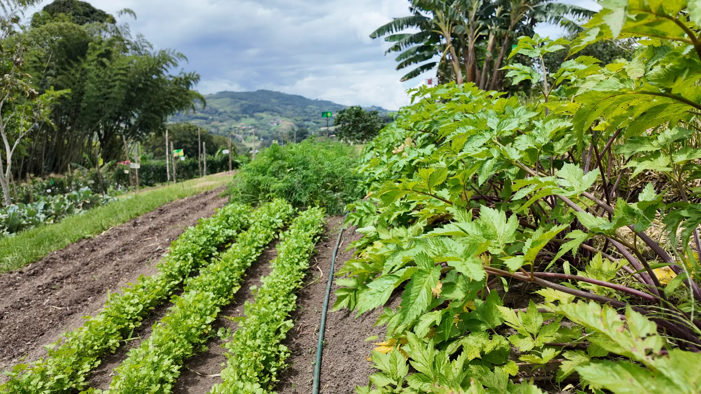
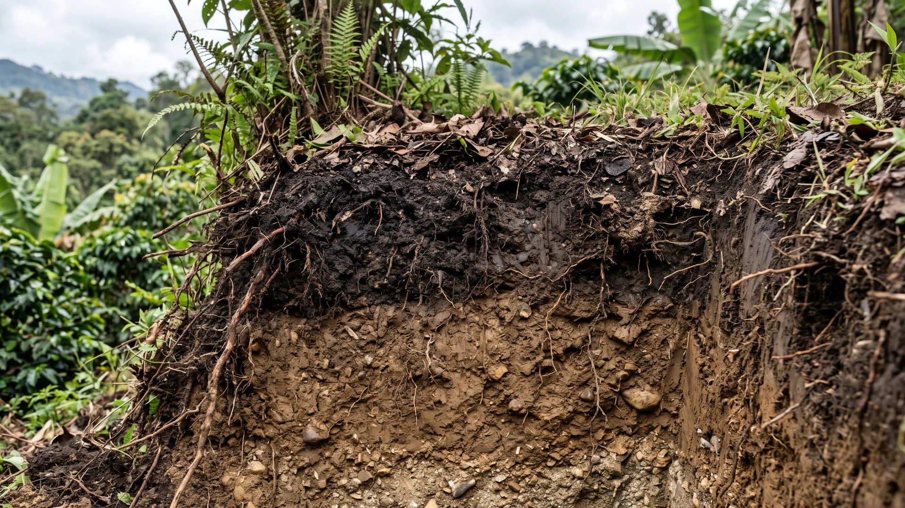
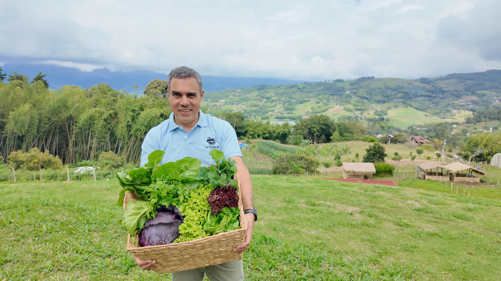

Del clima global al predio, y de vuelta al mercado.
Los árboles del recorrido, la sombra sobre las camas, las coberturas, la vista del valle desde la terraza alta. Nada de eso es paisaje: es el Principio 1 funcionando.
En esta hora le ponemos nombre y número a lo que vieron.
Una fábrica. Nació en 1913, de la misma industria que hizo los gases de guerra.
La enzima nitrogenasa. Ya está en el suelo que pisaron hoy. Lo único que hay que hacer es no matarla.
El 78 % de la atmósfera es nitrógeno. La diferencia entre las dos columnas no es el resultado: es el costo.

de la energía mundial se gasta en fabricar fertilizante nitrogenado que el suelo podría producir solo.
Vandana Shiva lo resume en una frase: la agricultura moderna se hizo con los residuos de la guerra.

Hoy no vieron un solo metro así en la finca. No es casualidad.
Si todos los que trabajamos la tierra subiéramos ese porcentaje anual de materia orgánica en el suelo, compensaríamos todas las emisiones globales.
Rattan Lal · Premio Nobel de la Paz 2007 (IPCC) · Premio Mundial de la Alimentación 2020

La sombra de un estrato alto baja varios grados el suelo de abajo.
La transpiración de la biomasa devuelve agua al aire del predio.
Una barrera rompe la velocidad y corta la evaporación.
Los estratos reparten la luz en vez de dejarla golpear el suelo.
Ninguna de las cuatro se compra. Las cuatro se siembran.
Cinco alturas capturando la misma luz. Cuenten cuántas tiene su finca hoy.

El monocultivo usa una sola altura. Desperdicia luz, y con la luz, agua.
Rompen el viento, marcan la curva de nivel y alojan enemigos naturales.
Refugio permanente de mariquitas, avispas parasitoides y crisopas.
Atrapamoscas y cucaracheros trabajan si encuentran dónde pararse.
El microclima y el control biológico son el mismo diseño visto dos veces.
| Incremento de CO | Agua adicional L/m² | Agua adicional L/ha | CO₂ capturado t/ha |
|---|---|---|---|
| +1 % | 14,4 | 144.000 | 132 |
| +2 % | 28,8 | 288.000 | 264 |
| +3 % | 43,2 | 432.000 | 396 |
| +4 % | 57,6 | 576.000 | 528 |
Dra. Christine Jones · amazingcarbon.com.au

por hectárea. Eso se gana si el suelo pasa del 2 % al 4 % de carbono orgánico.
Es un reservorio que ninguna infraestructura fabricada vende a ese precio. Y se llena solo, con biomasa.
FAO · ENSIN · Perfil Nacional MinSalud. Ese hueco no es solo un problema de salud: es su mercado.

familias fieles. No hacen falta miles de clientes: hacen falta dos docenas que compren todas las semanas y que sepan su nombre.
Distancia máxima al centro de consumo: 30 a 40 minutos. Menos de una hora.
Ahí es donde compra hoy. Ese es el número con el que los va a comparar. Mismo precio, mejor comida, cara conocida.
En todos esos canales se pierde justo lo que los hace difíciles de reemplazar: la relación directa.
Y una vez al año se abre la finca al cliente. Esa visita vale más que cualquier sello que se pueda pagar.
Biomasa en varios estratos, cero suelo desnudo, carbono que retiene agua.
Veinte familias, treinta minutos, precio de supermercado convencional.